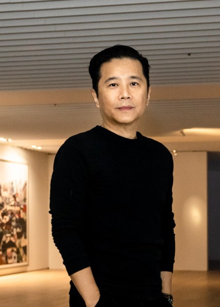
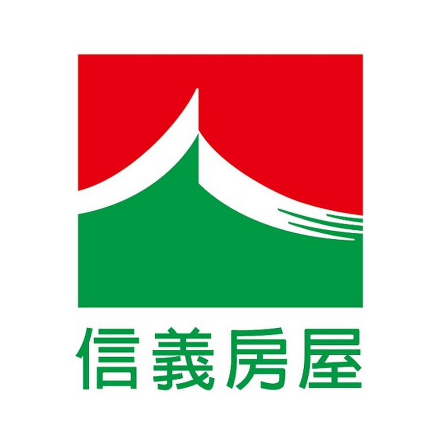
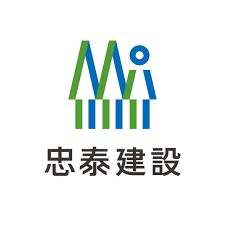
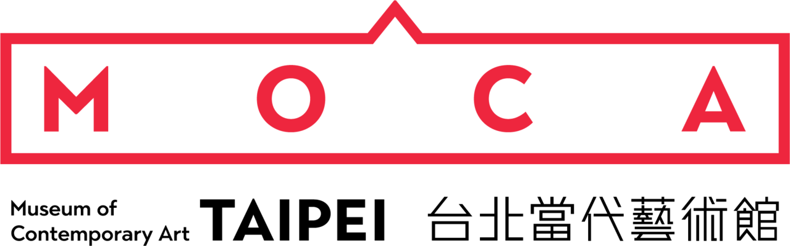
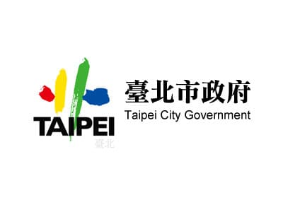
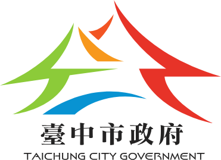
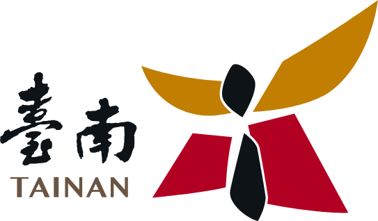
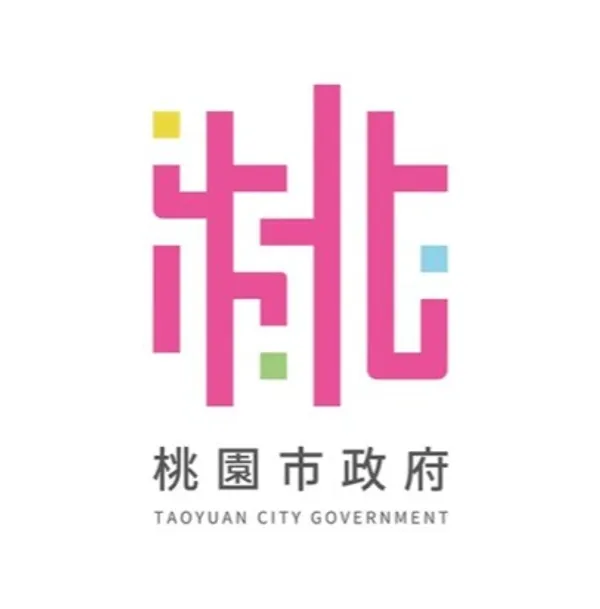
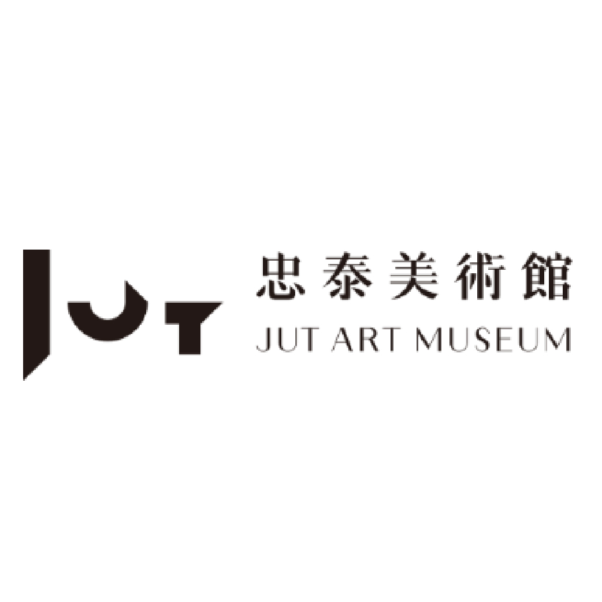

0+
完成專案

完成專案
展覽策劃
合作藝術家

FOUNDER & CEO
胡氏藝術創辦人暨執行長，紐約流行設計學院藝術管理碩士。長期投入當代藝術策展、公共藝術與城市文化實踐，曾任臺北白晝之夜藝術總監、臺灣視覺藝術協會理事長，並參與多項政府與企業文化計畫。
查看完整經歷從策略到現場，讓每一段關係成立。
釐清組織、場域與受眾的目標，建立計畫的文化定位與可持續架構。
把抽象議題轉化為敘事、展覽與參與體驗，讓不同的人找到進入作品的方法。
連結藝術、建築、設計、科技與社群資源，讓最適合的合作關係發生。
從預算、工程、現場到維護溝通，讓藝術完整落地並持續產生價值。
RECOGNITION
專業不只落在成果，也經得起公共文化與藝術領域的長期檢驗。
文化部第九屆公共藝術獎「環境融合獎」
獲選為文化部111年公共藝術年鑑封面
亞洲週刊第八屆全球傑出青年領袖
文化部第八屆公共藝術獎「藝術創作獎」
文化部第七屆公共藝術獎「評審特別獎」
第一屆河北國際工業設計週「最佳組織獎」
亞洲藝術新聞雜誌「亞洲年度最佳展覽」
香港 CoBo 雜誌「2017年亞洲十大好展」第三名
《藝術家》雜誌「2017年度十大公辦好展」
第九屆臺北市都市景觀大獎「地景藝術特別獎」
第九屆臺北市都市景觀大獎「地景藝術特別獎」
第九屆文化部文馨獎「創意大獎」
「十大公辦好展覽」年度好展
第一屆公共藝術大獎首獎








告訴我們目前的目標、場域與專案階段，我們將協助你釐清適合的藝術策略與執行方式。